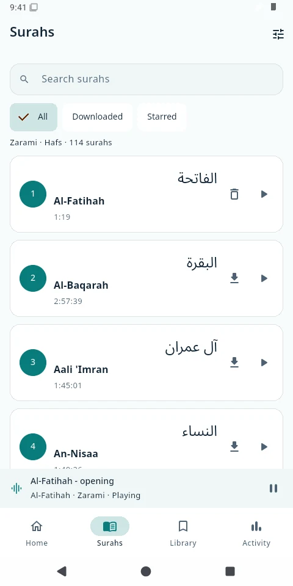
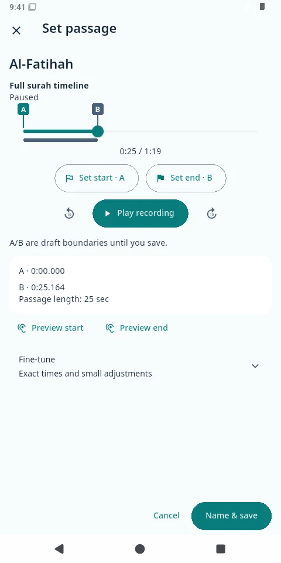
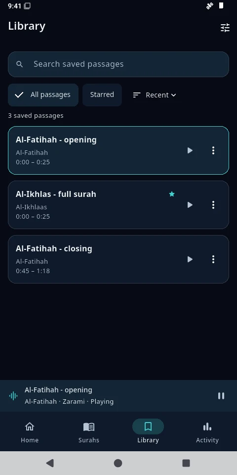
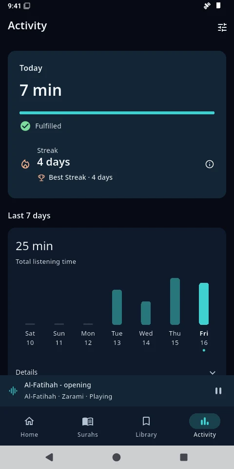

From choosing a surah to hearing a familiar passage again, keep everything close at hand.
01 CHOOSE
Begin with what you want to revise.
Browse the surahs, find your recording and choose the part you want to hear. Mark its start and end by listening.
↓Download once. Listen offline.Download a recording and wait for it to finish checking. Your saved passages can then use it without a connection.

Find your surah. Keep its recording with you.
02 REPEAT
Give a passage the time it needs.
Set your boundaries, choose how many times to listen, and adjust the speed or the pause between plays. Stay with it at your pace.
☾Let listening carry on.Listen while your screen is locked, and use your phone’s media controls to pause or return.

A beginning, an ending, and room to repeat.
03 RETURN
Save it. Come back to it.
Give a passage a name and keep it in your Library. Star the ones you return to often, without preparing another audio file.
A familiar passage. A fresh opportunity.

Your passages, ready for another day.
04 KEEP GOING
See the time you’ve made.
Follow your listening progress, set a daily goal and see your listening streak. A quiet way to notice the practice you’re building.
Listening activity records time spent listening. It doesn’t assess memorisation or recitation.

Small returns can become a daily practice.
Screenshots are from the released Android app, version 1.0.1+36. Passage names and activity shown are demonstration data.
A simple start
On your Android. At your pace.
Download the APK above, open it, and follow Android’s installation prompts. Your browser or device settings may ask you to allow installation from that source.
Android 7.0 or later. Recordings download separately.
A little more help installing
Use Download for Android. If the browser asks, confirm that you want to keep the APK.
Open the downloaded file. Android may direct you to allow your browser or file manager to install unknown apps. Allow only the source you intend to use.
Return to the installer and follow its prompts. You can turn that source’s installation permission off afterwards.
If the file doesn’t appear, check your browser’s Downloads or open the release page. A click on the download link does not confirm that a download finished.
For an additional integrity check, compare the file’s SHA-256 with the release’s checksum. Older private test builds may use a different signer: keep your app and export a verified metadata backup before following the migration instructions. Removing an app erases its local data.
Your library stays with you
The app stores your saved passages, settings and listening history on your device. There is no account or automatic cloud sync. Export a metadata backup from Settings to keep a separate copy; audio recordings are not included.
Al-Murāja’ah is released for Android, with Android 7.0 as the minimum. That minimum does not mean every device has been tested. An iOS release is not available.
Can I listen without internet?
Yes. Download a recording inside the app and wait for verification to finish. Your saved passages use that recording offline. You need internet for new recordings and for streaming audio that isn’t downloaded.
What happens when I save a passage?
The app saves your chosen start and end times, name and listening options. It reuses the recording, so each saved passage does not need its own audio file. Return to it from Library.
Is it on Google Play or the App Store?
Neither store is available yet. The Android APK is distributed through the project’s GitHub releases. There is no announced store launch date.
How can I send feedback or help?
Use Feedback in the app after reviewing the public-submission notice, or visit the public feedback tracker. Please leave out private information. For code contributions, read the contribution guide.
Al-Murāja’ah المراجعة
Make time to return.
Your next revision can begin with a single passage.
This website has no analytics, advertising trackers or cookies. If you choose a theme, that preference is stored in your browser. The hosting provider may process ordinary access logs. Downloads take you to GitHub. The app keeps your library locally; streaming and downloads contact its audio host, and submitted feedback passes through Cloudflare to a public GitHub issue.
With gratitude
Recitations in the app include Goni Bukar Zarami, with credited replacement recordings by Shaykh Umar Idris and Shaykh Yahaya Ibrahim Muhammad. Chapter metadata is attributed to Tanzil. Typography uses Cairo under the SIL Open Font License. Thank you to everyone who helped bring the app into being.